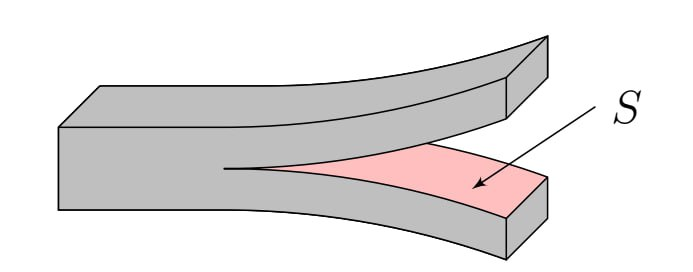
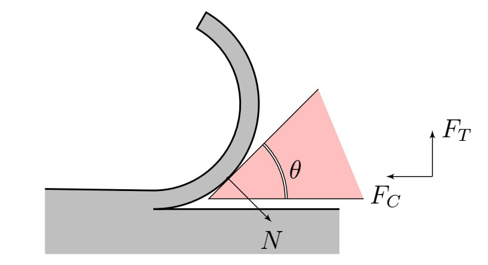
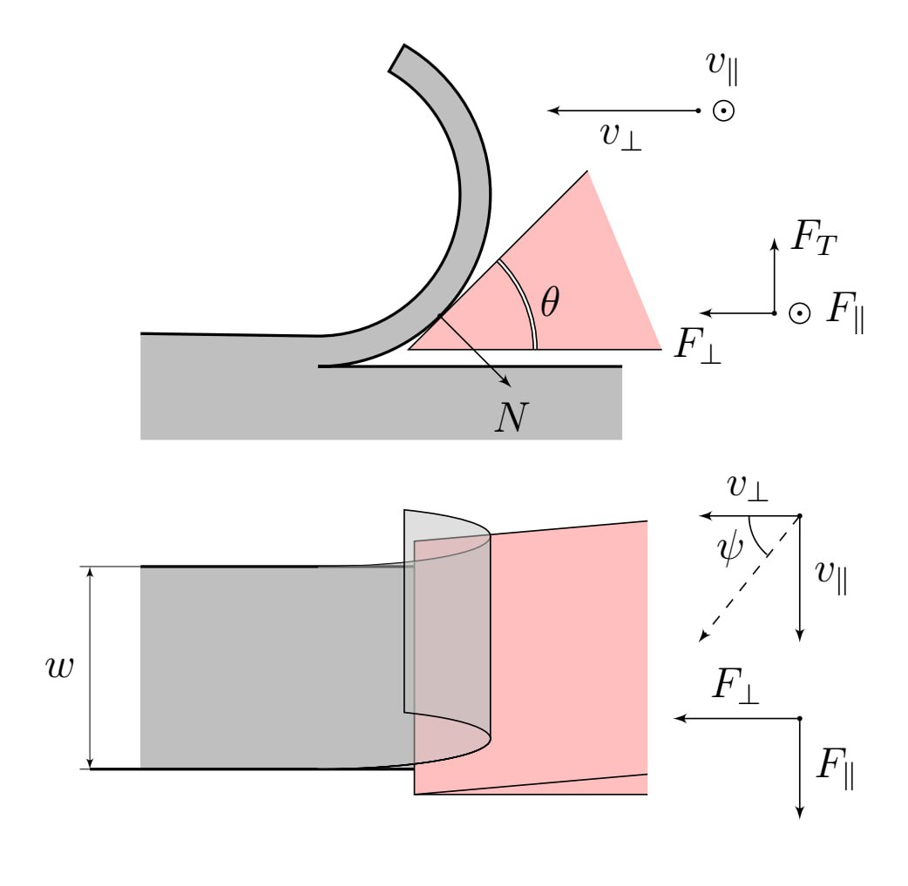
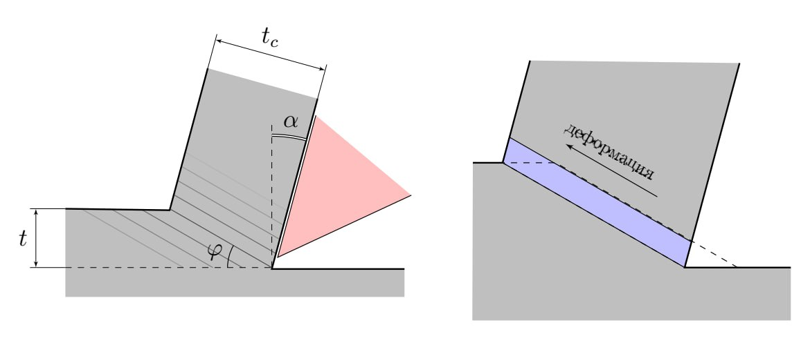
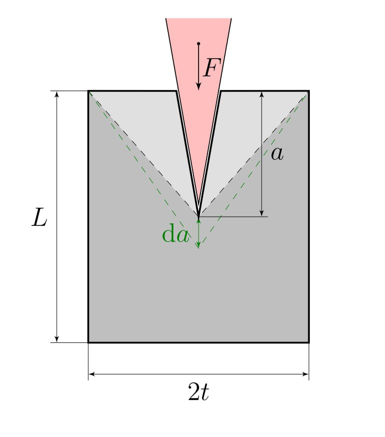

Y26 (2026) — English translation
This problem examines a model of the forces involved in cutting, a simplified two-dimensional process in which a tool with a straight blade moves perpendicular to its edge to remove a layer of material of constant thickness. Throughout the task, consider the tool to be perfectly sharp. The following physical quantities are used in the problem: specific work of separation \(R\) (in \(\text{J/m}^2\)) - the work to separate a unit area of cut from the material, for example, when cutting a sheet with a cross-sectional area $S$, energy $\Delta E=RS$ is released (see Fig. 1). friction coefficient \(\mu\) between the tool and the material. These characteristics of materials during the cutting process can be considered constant.
Throughout the task, consider the tool to be perfectly sharp. The following physical quantities are used in the problem:
These characteristics of materials can be considered constant during the cutting process.
Fig.1. Sheet section

The cut sample with a flat edge has a width $w$. The inclined wedge with angle $\theta$ is a sharp cutting tool. In Fig. 2, the lower edge of the wedge is parallel to the cutting plane and does not touch the cutting surface. Thus, the cut touches and slides only along the top edge.
Let's introduce the following force designations (see Fig. 2): $F_C$ – component of the force acting on the knife, balancing the force of interaction with the chips, parallel to the plane of movement of the knife and acting in the direction of movement of the cutting edge, $F_T$ – component of the force acting on the knife, balancing the force of interaction with the chips, perpendicular to the cutting surface and directed away from it, $N$ – normal reaction force acting from the side of the cut on the knife. This force is perpendicular to the top plane of the knife
Consider cutting a very flexible, soft material. In this part, assume that the cut is not stretched and that the work expended in bending the cut is negligible, that is, the work performed by the cutting tool is spent only on creating new surfaces and overcoming friction. The knife interacts with the material only with its upper inclined edge.
The knife interacts with the material only with its upper inclined edge.

If you pull the knife towards you at the same time (combine “pushing” and “shifting”), cutting can become much easier. This effect is described by the angle $\psi$ between the normal to the blade and the direction of movement. The knife moves with speed $v_{\perp}$ along the cutting direction and with speed $v_{\parallel}$ along the cutting line. Otherwise, continue with the Part A model.
The knife moves at a speed of $v_{\perp}$ along the cutting direction and at a speed of $v_{\parallel}$ along the cutting line.
Otherwise, continue with the Part A model.

When cutting metals, irreversible plastic shear deformations occur in the cut. In the idealized model, deformation occurs in a thin shear plane inclined at an angle $\varphi$ to the horizon (see Fig. 5). The metal volume element shown in the figure intersects this plane, is irreversibly deformed and accumulates energy. Its faces are shifted parallel to the shear plane. In Fig. 5 on the right, the dotted line shows the shape of the element before deformation, and the blue rectangle shows it after deformation. In the reference frame of the wedge, a layer of deformed metal moves along its surface at a constant speed. The upper plane of the wedge forms an angle $\alpha$ with the normal to the metal surface. The interaction of the wedge with the metal occurs only on the upper surface of the wedge. Let $t$ be the thickness of the layer that is deformed during cutting, $t_c$ be the thickness of the layer of deformed metal that forms on the upper surface of the wedge.

Shear energy must be taken into account. To do this, let's calculate the relative displacement of the layers. Let us introduce the parameter $\gamma=\dfrac{|\vec v_2-\vec v_1|}{|\vec v_1|\sin\varphi}$, where $\vec v_2$ is the layer velocity after the knife passes in the knife reference frame, $\vec v_1$ is the layer speed before the knife passes in the knife reference frame.
The energy required for shear deformation is expressed as $\mathrm d\Gamma=k\gamma wt\mathrm dr,$ where $\mathrm dr$ is the horizontal displacement of the knife, $k$ is a constant value. For convenience, in the next paragraph you can enter the designation $\mu=\operatorname{tg}\beta$. Similar to part A, the forces $F_C$ and $F_T$ act on the knife.
Traditionally, in theories of metal cutting, the value of the specific work of separation $R$ is neglected.
This relationship was given by Ernst and Merchant in 1944. To predict cutting forces using this equation, it is necessary to know $\mu$ as well as $\varphi$. Merchant argued that for a given $\beta$ the angle $\varphi$ will self-adjust to minimize $F_C$.
To predict cutting forces using this equation, you need to know $\mu$ as well as $\varphi$. Merchant argued that for a given $\beta$ the angle $\varphi$ will self-adjust to minimize $F_C$.
Experimental data for metals do not fully agree with Merchant’s theory and differ for different metals, although the form of the dependence of $\varphi$ on $\beta - \alpha$ is the same. This theory was later applied to other materials, in particular polymers and wood.
Consider a sample stretched perpendicular to the direction of the cut. When cutting, strain energy is released and feeds the crack so that less external work is required by the blade. The greater the prestress, the smaller the cutting forces. This fact is used, for example, when cutting rubber. A sheet of length $L$, thickness $w$ and width $2t$, already containing a cut of length $a$, will have triangular undeformed areas along the cut (Fig. 6). As the cut lengthens by $\mathrm da$, the undeformed regions grow and release elastic strain energy $\mathrm d\Lambda$.
A sheet of length $L$, thickness $w$ and width $2t$, already containing a cut of length $a$, will have triangular undeformed areas along the cut (Fig. 6). As the cut lengthens by $\mathrm da$, the undeformed regions grow and release elastic strain energy $\mathrm d\Lambda$.

Let us consider a tensile sample whose elastic behavior during deformation obeys the linear relation $\sigma = E \varepsilon$, where $E$ is the Young’s modulus of the material. The cutting is established and occurs quasi-statically. Assume that the stress is zero inside the indicated triangular regions and equal to $\sigma$ throughout the rest of the sheet. The vertices of the triangular areas are always at the corners of the sheet and at the point of contact between the knife and the sheet.
Source: https://pho.rs/p/5052